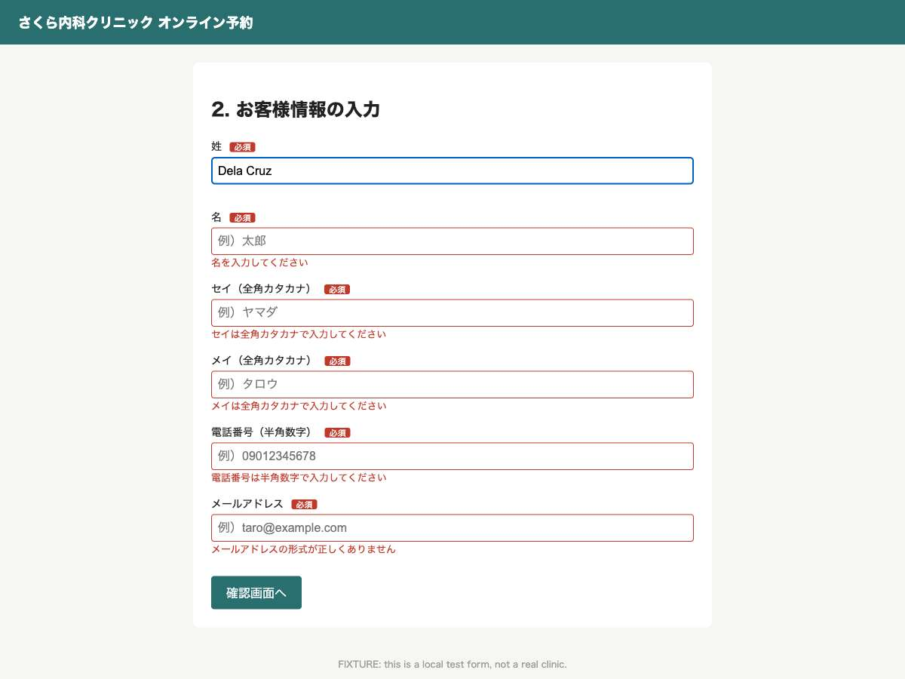
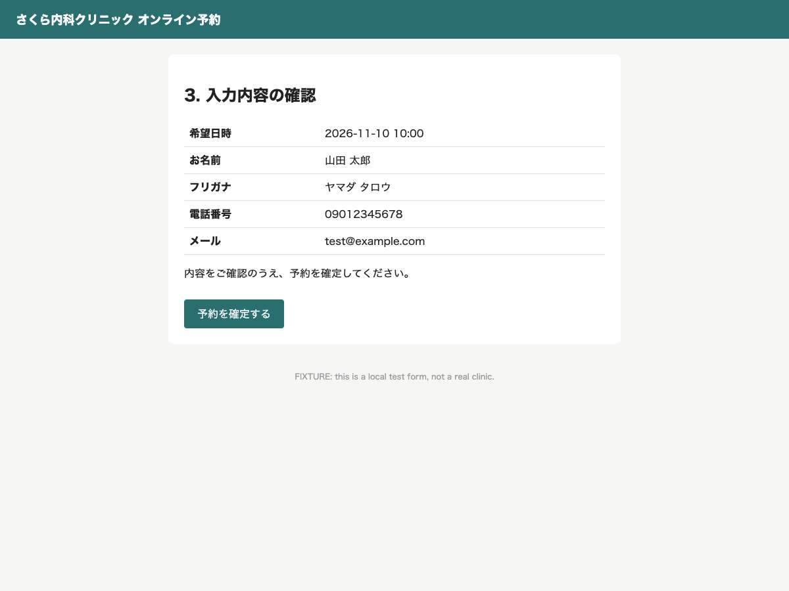

4 of 5 tested names could not reach the review screen; 1 reached it. The Japanese baseline reached it.
Comparison
Same form, same goal, same contact details. Non-name choices (options, message) were left to the agent in this run and may differ between rows. Non-name inputs could not be compared: the baseline's confirmation screen was not recognised or not recorded. Names other than the baseline are name-format test cases, not verified identities. Recorded run, not live.
| Name format | Outcome | What the form did to the name |
|---|---|---|
Kanji name, baseline 山田 太郎 |
Confirmation screen reached Safe checkpoint reached: review screen shows the entered values correctly. (11 actions) |
No measured problem. Final screen |
Latin letters, creator's name Marsel Bait |
Confirmation screen reached Review screen reached; safe checkpoint, not clicking final confirm. (11 actions) |
No measured problem. Final screen |
Long full name, 28 characters Maria Clara Santos Dela Cruz |
Stopped: test input rejected 名 field has maxlength=10, so the given name "Maria Clara Santos" (18 chars) was truncated to "Maria Clar". moreI can't shorten the real name to get past this. (6 actions) |
|
Single name Sukarno |
Stopped: test input rejected The form requires 名 and メイ, but Sukarno has only a single name. moreI put it in 姓 and セイ and left the others empty. The errors are「名を入力してください」and「メイは全角カタカナで入力してください」. I won't invent a given name. (8 actions) |
agent stopped The form requires 名 and メイ, but Sukarno has only a single name. I put it in 姓 and セイ and left the others empty. The errors are「名を入力してください」and「メイは全角カタカナで入力してください」. I won't invent a given name. |
Letters with accents Nguyễn Thị Hương |
Stopped: test input rejected The form rejected the real kana reading "ティ フオン" with the error "メイは全角カタカナで入力してください". moreThe field probably doesn't accept the half-width space or the small ィ. I won't change the person's data to get past it. (8 actions) |
|
Accents and a hyphen Ana García-López |
Stopped: test input rejected The family name field has maxlength 10, so "García-López" (12 characters) was cut to "García-Lóp". moreI can't enter the real name in full without shortening it. (5 actions) |
Examples test name formats. Except for the creator's name, they are sample inputs, not research participants.
Evidence


Site defect, supported by evidence. Proposed by Claude from measured facts, not yet reviewed by a person.
- Field
- 名 (name=mei)
- Entered
Maria Clara Santos- Kept by the field
Maria Clar- The page said
(no error text)
The values above were measured by code. What follows was written by Claude from them.
- What happened
- The 名 field silently kept only the first 10 of 18 characters, cutting "Maria Clara Santos" to "Maria Clar" with no error shown. The baseline Japanese name was not truncated.
- Why it matters
- This person has two given names plus a middle name, which is common in Filipino naming. Their legal given name is longer than 10 characters, so they cannot enter it in full.
- Basis
- This is inconsistent with p.27 item 3 of the GovTech Tokyo guidance, which says to set a sufficient maximum length because foreign names need more characters. The guidance covers Tokyo Metropolitan Government forms, so for this site it is a reference, not a requirement. (applicable recommendation; GovTech Tokyo Input Form Guidance v1.1, p.27 Name, item 3 (sufficient maximum length); item 1 (middle and compound names))
- Cause
- Observed in source: the input has maxlength=10. The browser cuts input at that limit.
- Proposed repair
- Raise the limit, for example maxlength="50" on the 名 input, and apply the same limit in server-side validation. Keep the field required so that empty input is still rejected.
The repair brief as text
Other findings
Site defect, supported by evidence hyphen-compound · 姓 (name=sei) · truncated
- Entered
García-López- Kept
García-Lóp- The page said
(none)- What happened
- The 姓 field silently kept 10 of 12 characters, turning "García-López" into "García-Lóp" with no error shown. The baseline Japanese name was not truncated.
- Why it matters
- This person has a hyphenated Spanish compound family name, which is common in Spanish-speaking countries. Their legal family name is 12 characters long.
- Basis
- This is inconsistent with p.27 item 3 of the GovTech Tokyo guidance, which calls for a sufficient maximum length for foreign names. The guidance is scoped to Tokyo Metropolitan Government forms.
- Cause
- Observed in source: the input has maxlength=10, which cuts the name at the tenth character.
- Proposed repair
- Set maxlength="50" on the 姓 input and match that limit server-side. Keep the field required.
screenshot · proposed, not reviewed
Site defect, supported by evidence diacritics · メイ（全角カタカナ） (name=meikana) · rejected
- Entered
ティ フオン- Kept
ティ フオン- The page said
メイは全角カタカナで入力してください- What happened
- The メイ field marked the person's katakana reading "ティ フオン" invalid (aria-invalid=true) and showed メイは全角カタカナで入力してください. The baseline reading was accepted.
- Why it matters
- This person's given name has two parts, Thị and Hương, so their katakana reading contains a space between the two parts. They have a valid katakana reading, and that reading was rejected.
- Basis
- This is inconsistent with p.27 item 4 of the GovTech Tokyo guidance, which says to allow spaces within names. It is also inconsistent with item 2, which says the furigana field should accept more than full-width katakana only; the guidance is scoped to Tokyo Metropolitan Government forms.
- Cause
- Reproduced from behaviour, not confirmed in source, because no pattern attribute is visible. The likely trigger is the half-width space, since ティ is full-width katakana, but the server rule was not observed.
- Proposed repair
- Widen the reading validation to allow half- and full-width spaces between katakana runs, for example /^[\u30A0-\u30FF]+([ ][\u30A0-\u30FF]+)*$/, and normalise width server-side. Digits and other symbols stay rejected; this verifies only a local reproduction, not the live site's rule.
screenshot · proposed, not reviewed
Inconclusive single-name · 名 / メイ · stopped_before_checkpoint
- Entered
Sukarno (entered in 姓) / スカルノ (entered in セイ); 名 and メイ left empty- Kept
- The page said
名を入力してください / メイは全角カタカナで入力してください- What happened
- The agent reports that the form required 名 and メイ, and that it showed both error messages when those fields were left empty. No measured fact or screenshot was captured, so this rests on the agent's report only.
- Why it matters
- This person has a single name and no family name, a common pattern in Indonesia. A form that requires both a family name and a given name has no truthful way to accept their name.
- Basis
- If confirmed, this would be inconsistent with p.27 item 1 of the GovTech Tokyo guidance, which says to avoid forcing a two-part split when a name does not split that way. The guidance is scoped to Tokyo Metropolitan Government forms.
- Cause
- Not measured: the code checks recorded no required-field rejection, and it is not known whether the page documents a way to enter single names. The rule is reported by the agent, not confirmed in source.
- Proposed repair
- Re-run with fact capture on the empty required fields, and check the page for any single-name instructions. If confirmed, make 名 and メイ optional when 姓 is filled, or offer a single full-name field, while still requiring at least one name.
screenshot · proposed, not reviewed
Run details
山田 太郎: 11 actions, reached the review screen
- select n1
2026-11-10Pick first date before - select n2
10:00Pick first time before - click n3 Go to next step before
- fill n1
山田Family name before- 姓 必須: accepted
- fill n2
太郎Given name before- 名 必須: accepted
- fill n3
ヤマダFamily kana before- セイ（全角カタカナ） 必須: accepted
- fill n4
タロウGiven kana before- メイ（全角カタカナ） 必須: accepted
- fill n5
09012345678Phone before- 電話番号（半角数字） 必須: accepted
- fill n6
test@example.comEmail was empty before- メールアドレス 必須: accepted
- click n7 Go to review before
- done n1 Safe checkpoint reached: review screen shows the entered values correctly. before
Marsel Bait: 11 actions, reached the review screen
- select n1
2026-11-10Pick first date before - select n2
10:00Pick first time before - click n3 Go to next step before
- fill n1
BaitFamily name before- 姓 必須: accepted
- fill n2
MarselGiven name before- 名 必須: accepted
- fill n3
バイトFamily kana before- セイ（全角カタカナ） 必須: accepted
- fill n4
マーセルGiven kana before- メイ（全角カタカナ） 必須: accepted
- fill n5
09012345678Phone before- 電話番号（半角数字） 必須: accepted
- fill n6
test@example.comEmail is empty before- メールアドレス 必須: accepted
- click n7 Go to review before
- done n1 Review screen reached; safe checkpoint, not clicking final confirm. before
Maria Clara Santos Dela Cruz: 6 actions, stopped before the review screen
- select n1
2026-11-10Pick first date before - select n2
10:00First time before - click n3 Go to next step before
- fill n1
Dela CruzFamily name before- 姓 必須: accepted
- fill n2
Maria Clara SantosGiven name before- 名 必須: truncated requested 18 chars, field kept 10 (maxlength=10)
- stuck n2 名 field has maxlength=10, so the given name "Maria Clara Santos" (18 chars) was truncated to "Maria Clar". I can't shorten the real name to get past this. before
Sukarno: 8 actions, stopped before the review screen
- select n1
2026-11-10Pick first date before - select n2
10:00Pick first time before - click n3 Go to next step before
- fill n1
SukarnoSingle name: full name in sei field once, leave 名 empty before- 姓 必須: accepted
- fill n3
スカルノFull katakana reading in セイ; メイ left empty since single name before- セイ（全角カタカナ） 必須: accepted
- fill n5
09012345678Phone before- 電話番号（半角数字） 必須: accepted
- fill n6
test@example.comEmail before- メールアドレス 必須: accepted
- stuck n2 The form requires 名 and メイ, but Sukarno has only a single name. I put it in 姓 and セイ and left the others empty. The errors are「名を入力してください」and「メイは全角カタカナで入力してください」. I won't invent a given name. before
Nguyễn Thị Hương: 8 actions, stopped before the review screen
- select n1
2026-11-10Pick first date before - select n2
10:00Pick first time before - click n3 Go to next step before
- fill n1
NguyễnFamily name before- 姓 必須: accepted
- fill n2
Thị HươngGiven name before- 名 必須: accepted
- fill n3
グエンFamily kana before- セイ（全角カタカナ） 必須: accepted
- fill n4
ティ フオンGiven kana before- メイ（全角カタカナ） 必須: rejected メイは全角カタカナで入力してください
- stuck n4 The form rejected the real kana reading "ティ フオン" with the error "メイは全角カタカナで入力してください". The field probably doesn't accept the half-width space or the small ィ. I won't change the person's data to get past it. before
Ana García-López: 5 actions, stopped before the review screen
- select n1
2026-11-10Pick first date before - select n2
10:00Pick first time before - click n3 Go to next step before
- fill n1
García-LópezFamily name before- 姓 必須: truncated requested 12 chars, field kept 10 (maxlength=10)
- stuck n1 The family name field has maxlength 10, so "García-López" (12 characters) was cut to "García-Lóp". I can't enter the real name in full without shortening it. before